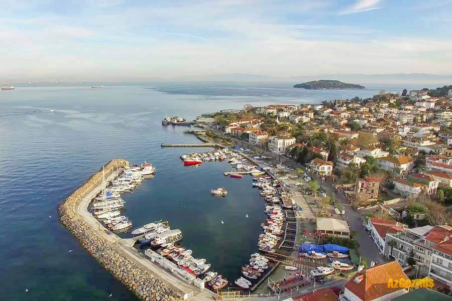
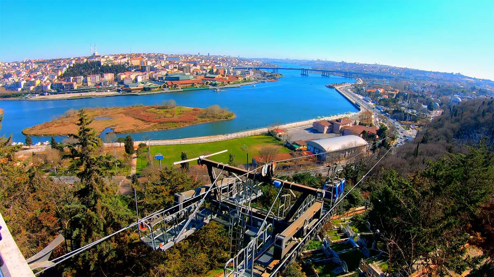
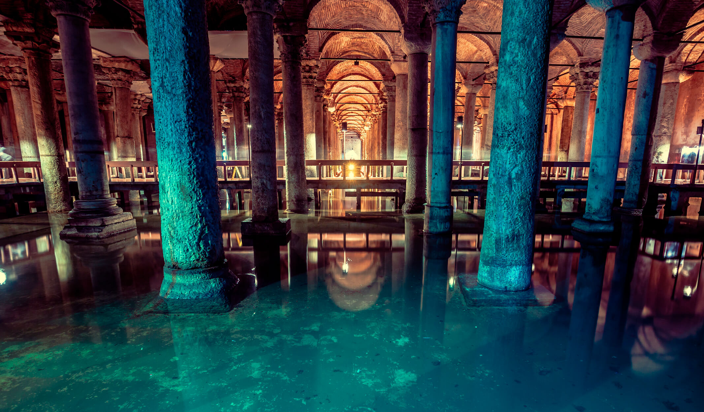
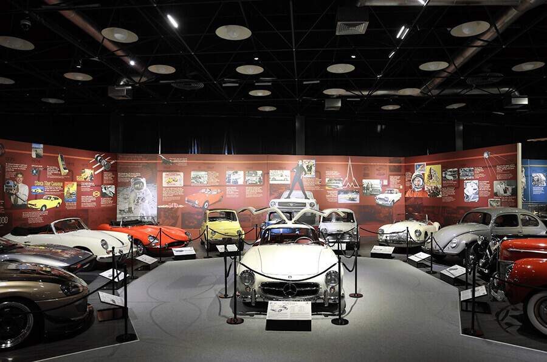

Adalar’da Bisiklet Turu
Büyükada, Heybeliada, Burgazada ve Kınalıada, şehirden uzaklaşıp doğa
ile iç içe zaman geçirmek isteyenler için birebir. Adalarda motorlu
taşıt yasak olduğu için bisikletle dolaşmak hem keyifli hem de huzurlu
bir deneyim sunuyor.
Devamını Oku...

Balat - Renkli Evler
Balat, tarihi dokusu ve rengarenk evleriyle biliniyor. Ancak son
yıllarda, bu semt bir sanat merkezine dönüştü. Sokak duvarlarında
çeşitli grafitiler, butik kafeler ve vintage dükkânlarla dolu.
Fotoğraflık sokakları ve tarihi atmosferiyle tam bir Instagram
cenneti.
Devamını Oku...

Pierre Loti Tepesi
Eyüp’te bulunan Pierre Loti Tepesi, adını burada zaman geçiren Fransız
yazar Pierre Loti’den alıyor. Teleferikle tepeye çıkıp, Haliç'in
büyüleyici manzarasını izlemek bambaşka bir deneyim.
Devamını Oku...

Yerebatan Sarnıcı
Sultanahmet'te yer alan Yerebatan Sarnıcı, Bizans döneminden kalma
büyüleyici bir yapıdır. Sarnıcın en dikkat çekici detaylarından biri
ise ters ve yan duran Medusa başlarıdır. Bu başların neden bu şekilde
yerleştirildiği hala bir gizemdir.
Devamını Oku...

Rahmi Koç Müzesi
Haliç kenarında yer alan bu müzede, sanayi ve teknoloji tarihine dair
çok geniş bir koleksiyon sergileniyor. Uçaklardan klasik arabalara,
denizaltılardan eski ev eşyalarına kadar her şeyi burada
bulabilirsiniz.
Devamını Oku...

Atatürk Arboretumu
Sarıyer’de bulunan Atatürk Arboretumu, doğa severler için adeta bir
cennet. Çeşitli bitki türlerinin sergilendiği bu alan, huzurlu
yürüyüşler yapmak ve doğanın tadını çıkarmak için ideal.
Devamını Oku...